<meta charset="utf-8">
<meta name="viewport" content="width=device-width, initial-scale=1">
<title>RoboCop: maps</title>
<link rel="preconnect" href="https://fonts.googleapis.com">
<link rel="stylesheet" href="https://fonts.googleapis.com/css2?family=Lato:wght@400;700;900&family=IBM+Plex+Mono:wght@400;500&display=swap">
<style>
:root{
  --bg:#23262d; --paper:#e9e7e1; --surface:#ffffff; --surface-2:#f1efea; --line:#d5d3cc; --line-soft:#e0ded8;
  --ink:#2f3136; --ink-soft:#55585f; --ink-mute:#80838a;
  --link:#1f5fa8; --link-hover:#154480; --accent:#1f5fa8;
  --amber:#c25a00; --cyan:#1f5fa8; --coral:#d04a3a; --green:#2a8a4a; --violet:#4a5bd6; --hl:#fff0c2;
  --chip:#2f3136; --chip-ink:#ffffff;
  --c64blue:#40318d; --c64grey:#686868;
  --fd:'Lato',system-ui,sans-serif; --fb:'Lato',system-ui,sans-serif; --fm:'IBM Plex Mono',ui-monospace,Menlo,monospace;
  --col:1080px; --gx:68px; --fs:17px; --lh:1.6; --hw:900; --h1:46px; --h2:26px; --sy:48px; --pp:26px; --r:10px;
  --plate-shadow:0 1px 2px rgba(0,0,0,.05),0 4px 14px rgba(0,0,0,.05);
}
*{box-sizing:border-box}
html{background:var(--bg);min-height:100%}
body{background:var(--paper);color:var(--ink);font-family:var(--fb);font-size:var(--fs);line-height:var(--lh);max-width:var(--col);margin:0 auto;min-height:100vh;padding:0 0 4rem}
h1,h2,h3{font-weight:var(--hw);letter-spacing:-.01em;text-wrap:balance;color:var(--ink);margin:0}
.wrap{padding:0 var(--gx)}
.hero{padding:48px var(--gx) 8px;text-align:left}
.eyebrow{font-family:var(--fm);font-size:12px;letter-spacing:.08em;text-transform:uppercase;color:var(--ink-mute);margin:0 0 10px}
.hero h1{font-size:var(--h1);line-height:1.15;letter-spacing:-.02em;margin:0 0 14px}
.hero .sub{margin:0 0 .6em;color:var(--ink-soft)}
section{padding:var(--sy) 0 24px}
section:last-of-type{border-bottom:none}
.fig{font-family:var(--fm);font-size:12px;letter-spacing:.08em;text-transform:uppercase;color:var(--ink-mute);margin:0 0 10px}
h2.t{font-size:var(--h2);margin-bottom:12px}
.lede{color:var(--ink-soft);margin:0 0 30px}
.plate{background:var(--surface);border:1px solid var(--line);border-radius:var(--r);padding:var(--pp);box-shadow:var(--plate-shadow)}
.cap{font-size:14px;color:var(--ink-mute);margin-top:14px;line-height:1.55}
.cap b{color:var(--ink);font-weight:700}
code{font-family:var(--fm);font-size:.82em;background:var(--chip);color:var(--chip-ink);border-radius:4px;padding:2px 6px;overflow-wrap:break-word;-webkit-box-decoration-break:clone;box-decoration-break:clone}

.ft-grid{display:grid;gap:6px}
.ft-grid button{padding:0;position:relative;line-height:0}
.ft-grid canvas{width:100%;image-rendering:pixelated;display:block}
.ft-tag{position:absolute;left:3px;top:3px;font:500 11px/1.3 var(--fm);background:rgba(255,255,255,.88);color:var(--ink);border-radius:3px;padding:1px 4px}
.ft-mark{position:absolute;right:3px;bottom:3px;font:500 10px/1.3 var(--fm);background:var(--chip);color:var(--chip-ink);border-radius:3px;padding:1px 4px}
.ft-big canvas{width:100%;max-width:768px;image-rendering:pixelated;display:block;margin:0 auto}
.ft-table{border-collapse:collapse;font-size:14px;width:100%}
.ft-table td,.ft-table th{border-bottom:1px solid var(--line-soft);padding:5px 8px;text-align:left;vertical-align:top}
.ft-two{display:grid;grid-template-columns:1fr 1fr;gap:16px;align-items:start}
.ft-four{display:grid;grid-template-columns:repeat(3,1fr);gap:12px;margin:0 0 20px}
.ft-four .plate,.ft-two .plate{margin:0;padding:12px}
.ft-shot,.ft-px{width:100%;height:auto;image-rendering:pixelated;display:block}
.ft-wide{max-width:960px;margin:0 auto}
.plate{margin:0 0 22px}
.ft-scroll{overflow-x:auto}
.ft-lab{display:block;font-family:var(--fm);font-size:13px;color:var(--ink-soft);margin:6px 0}
.ft-range{width:100%;max-width:520px;display:block}
.ft-controls{display:grid;grid-template-columns:repeat(3,1fr);gap:14px;margin:12px 0 0}
.ft-read{font-family:var(--fm);font-size:14px;background:var(--surface-2);border-radius:6px;padding:10px 12px;margin:12px 0 0}
.ft-bar-out{height:12px;background:var(--surface-2);border:1px solid var(--line);border-radius:6px;overflow:hidden;margin:10px 0 0;max-width:520px}
.ft-bar-out div{height:100%;background:repeating-linear-gradient(45deg,var(--amber) 0 6px,#e08a3c 6px 12px)}
.ft-meter{position:relative;width:110px;height:18px;background:var(--surface-2);border:1px solid var(--line);border-radius:4px;overflow:hidden}
.ft-meter span{position:absolute;left:0;top:0;bottom:0;background:var(--cyan);opacity:.35}
.ft-meter b{position:relative;font:500 12px/18px var(--fm);padding-left:6px}
.ft-objs{white-space:nowrap}
.ft-obj{display:inline-flex;flex-direction:column;align-items:center;margin:0 3px 0 0;padding:2px;background:#222;border-radius:4px;vertical-align:top}
.ft-obj i{font:500 10px/1.2 var(--fm);color:#fff;font-style:normal}
.ft-swapped{outline:2px dashed var(--amber);outline-offset:-2px}
.ft-swapped i{text-decoration:line-through;text-decoration-color:var(--amber)}
.ft-table canvas{background:#222;border-radius:4px;image-rendering:pixelated}
.ft-dead{display:flex;flex-wrap:wrap;gap:6px;margin:12px 0 0}
.ft-dead button{font-size:12px;padding:4px 8px}
@media (max-width:760px){:root{--gx:16px;--h1:36px;--pp:14px}.ft-two,.ft-four,.ft-controls{grid-template-columns:1fr}}
sup.fn{font-size:.7em;line-height:0}
sup.fn a{text-decoration:none}
sup.fn + sup.fn::before{content:","}
.overview-shot{margin:22px 0}
.overview-shot img{width:100%;max-width:768px;height:auto;aspect-ratio:384/272;image-rendering:pixelated;display:block}
.overview-shot figcaption{font-size:14px;color:var(--ink-mute);margin-top:8px;max-width:768px}
</style>
<!-- tabs -->
<header class="hero">
  <p class="eyebrow">Commodore 64 · 1988 · Data East</p>
  <h1>RoboCop: maps</h1>
  <p class="sub">Every stage with a map, drawn whole from the game's own tiles, characters, and colours.</p>
</header>
<main class="wrap" data-part="">

<section id="how">
  <p class="fig">How these are drawn</p>
  <p>Each map below is drawn from a snapshot of memory taken at the start of its stage: the map's list of <a href="graphics.html#tiles">tiles</a>, the tiles' 16 characters each, the characters at <code>$4800</code>, and their colours at <code>$0F00</code>, with the stage's two shared multicolours. Each was checked against a screenshot of the same stage. Apart from the pixels of the figures, which are sprites and not part of the map, the drawn map and the screenshot agree. The maps show no enemies, because the enemies come from tables of their own as RoboCop walks.</p>
  <div class="plate ft-scroll"><table class="ft-table">
    <thead><tr><th>Stage</th><th>Map</th><th>Tiles</th><th>Size, in tiles</th></tr></thead>
    <tbody>
      <tr><td><a href="#stage1">1</a></td><td><code>$2000</code></td><td><code>$1000</code></td><td>86 across, 4 down</td></tr>
      <tr><td><a href="#stage2">2</a></td><td><code>$21AE</code></td><td><code>$1000</code></td><td>10 across, 4 down</td></tr>
      <tr><td><a href="#stage3">3</a></td><td><code>$21E0</code></td><td><code>$1000</code></td><td>86 across, 4 down</td></tr>
      <tr><td><a href="#stage5">5</a></td><td><code>$2000</code></td><td><code>$1000</code></td><td>40 across, 10 down</td></tr>
      <tr><td><a href="#stage6">6</a></td><td><code>$2190</code></td><td><code>$1C20</code></td><td>20 across, 5 down</td></tr>
      <tr><td><a href="#stage7">7</a></td><td><code>$21F4</code></td><td><code>$C400</code></td><td>17 across, 11 down</td></tr>
      <tr><td><a href="#stage8">8</a></td><td><code>$2000</code></td><td><code>$1000</code></td><td>46 across, 8 down</td></tr>
      <tr><td><a href="#stage9">9</a></td><td><code>$2171</code></td><td><code>$1000</code></td><td>10 across, 5 down</td></tr>
    </tbody></table>
    <p class="cap">Stages one to three are level one's, four to seven level two's, and eight and nine level three's, so the same address holds a different map in each load. Stage four, the photofit, has no map.</p></div>
</section>

<section id="stage1">
  <p class="fig">Stage 1 · Level one</p>
  <h2 class="t">The first street</h2>
  <p>RoboCop walks right along 86 tiles of street, almost nine screens. Enemies come along the pavement and lean out of windows. At the end, with no enemy left, comes STAGE ONE CLEAR, 2,000 points, and 12 units of baby food. The clock starts at 2:31.</p>
  <div class="plate ft-scroll">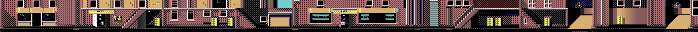</div>
</section>

<section id="stage2">
  <p class="fig">Stage 2 · Level one</p>
  <h2 class="t">The hostage</h2>
  <p>One screen, which does not scroll. A gunman walks behind his hostage, and the joystick moves a <a href="gameplay.html#hostage">crosshair</a>. Twenty hits on him in 36 seconds free the hostage.</p>
  <div class="ft-two">
    <div class="plate">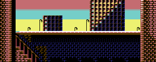<p class="cap">The map.</p></div>
    <div class="plate">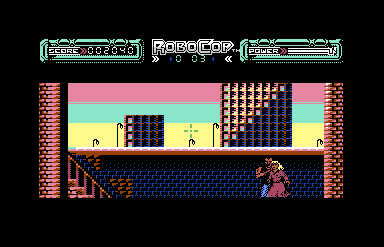<p class="cap">In play.</p></div>
  </div>
</section>

<section id="stage3">
  <p class="fig">Stage 3 · Level one</p>
  <h2 class="t">The second street</h2>
  <p>The same length as the first, with its own map and more windows. It ends at the end of the street with no enemy left: STAGE THREE CLEAR and 5,000 points, then the screen that loads level two.</p>
  <div class="plate ft-scroll">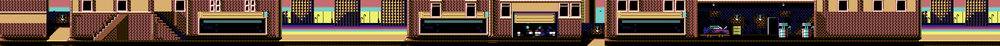</div>
</section>

<section id="stage4">
  <p class="fig">Stage 4 · Level two</p>
  <h2 class="t">The photofit</h2>
  <p>No map: the <a href="gameplay.html#photofit">photofit</a> draws its screen and two faces from tables of its own.</p>
  <div class="plate" style="max-width:420px">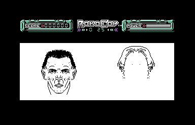</div>
</section>

<section id="stage5">
  <p class="fig">Stage 5 · Level two</p>
  <h2 class="t">The drug factory</h2>
  <p>The biggest map, 40 tiles across and 10 down, joined by flights of <a href="gameplay.html#stairs">stairs</a>. The screen scrolls in both directions. Its clock, 3:31, is the longest in the game.</p>
  <div class="plate ft-scroll">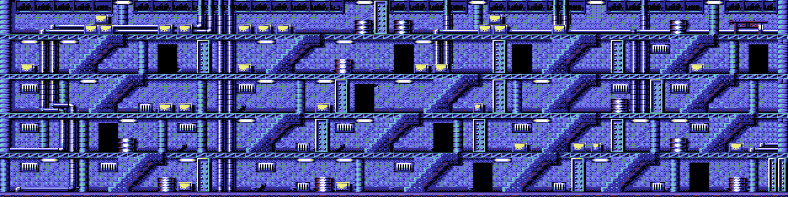</div>
</section>

<section id="stage6">
  <p class="fig">Stage 6 · Level two</p>
  <h2 class="t">OCP and ED-209</h2>
  <p>The only map with its tiles at <code>$1C20</code>. Here RoboCop <a href="gameplay.html#stairs">can only punch</a>, and six punches destroy ED-209.</p>
  <div class="plate ft-scroll">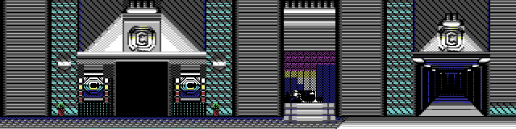</div>
</section>

<section id="stage7">
  <p class="fig">Stage 7 · Level two</p>
  <h2 class="t">The lifts</h2>
  <p>A tall map, 11 tiles high, with a lift that the joystick routine runs before anything else on this stage. Its tiles are at <code>$C400</code>, left there by level one, which is why the second disk image, which has other bytes there, <a href="discoveries.html#disk-b">draws this stage wrong</a>.</p>
  <div class="plate ft-scroll">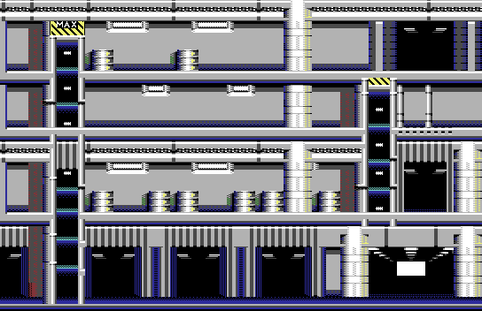</div>
</section>

<section id="stage8">
  <p class="fig">Stage 8 · Level three</p>
  <h2 class="t">The steel mill</h2>
  <p>46 tiles across and 8 down. An ED-209 appears here as an ordinary enemy that can be shot, with 50 hit points, and an armoured carrier leaves the Cobra cannon.</p>
  <div class="plate ft-scroll">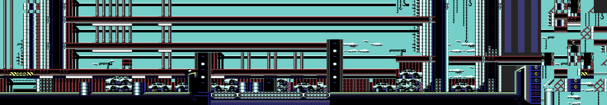</div>
</section>

<section id="stage9">
  <p class="fig">Stage 9 · Level three</p>
  <h2 class="t">The boardroom</h2>
  <p>The last stage is a second <a href="gameplay.html#hostage">hostage stage</a>: Dick Jones and OCP's president, 21 seconds on the clock, and eight hits on Jones to win.</p>
  <div class="ft-two">
    <div class="plate">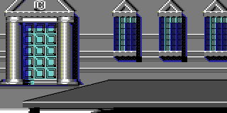<p class="cap">The map.</p></div>
    <div class="plate">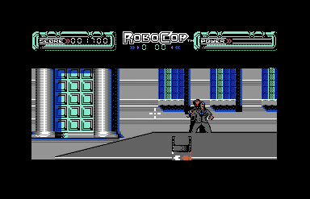<p class="cap">In play.</p></div>
  </div>
</section>
</main>

<footer style="margin:16px 0 0;padding:22px var(--gx) 0;border-top:1px solid #e0ded8;font-family:'IBM Plex Mono',ui-monospace,Menlo,monospace;font-size:12px;color:#80838a"><a href="https://github.com/gamesexplained/gamesexplained" style="color:#1f5fa8;text-decoration:none">GitHub</a> · <a href="https://discord.gg/3V9GWyRDWV" style="color:#1f5fa8;text-decoration:none">Discord</a><br>© Games Explained contributors. Write-ups, facts and symbol maps are available under <a href="https://creativecommons.org/licenses/by-sa/4.0/" style="color:#1f5fa8;text-decoration:none">CC BY-SA 4.0</a>; code under <a href="https://opensource.org/licenses/MIT" style="color:#1f5fa8;text-decoration:none">MIT</a></footer>
